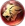
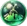
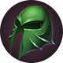
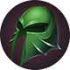
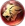
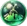

Garra de Lâmina
Garra de Lâmina
 Selvagem
Selvagem
 Sacrifício
Sacrifício
 Leão
 Lava
Luz Divina
Este é um site feito por fã em homenagem ao Champions Legion!
 



Garra de Lâmina
Selvagem
Sacrifício
 Leão
 Lava
Luz Divina
Brando é um personagem com pouca mobilidade. Você deve focar em farmar os minions da lane, a selva aliada do top e alguns monstros da selva inimiga sem entrar muito(ele não tem dano suficiente para ficar farmando muitos monstros, ele perderia muito tempo). Tente forçar lutas na lane phase para que seu adversário não saia pelo mapa, você não tem mobilidade para acompanhá-lo, tampouco dano para destruir torres facilmente.
De Brando é importante saber prender o adversário quando receber gank do seu jungler para que ele possa eliminar o inimigo facilmente.
Avance com a segunda habilidade, use a primeira seguida de ataques básicos e, caso o inimigo tente fugir, use a ultimate para prendê-lo.
Ordem de compra dos itens: Comece com o capacete de patrulheiro para adquirir farm extra e pode buildar os demais itens na ordem. No late game o capacete deve ser trocado por um dos dois itens sinalizados. Vale ressaltar que itens de defesa devem ser comprados mediante a necessidade. Compre itens que sirvam para tankar o dano mais forte do time inimigo.
Ordem de upgrade das habilidades: 1ª → 3ª → 2ª.
Cadê aquele inseto com as lâminas gêmeas?